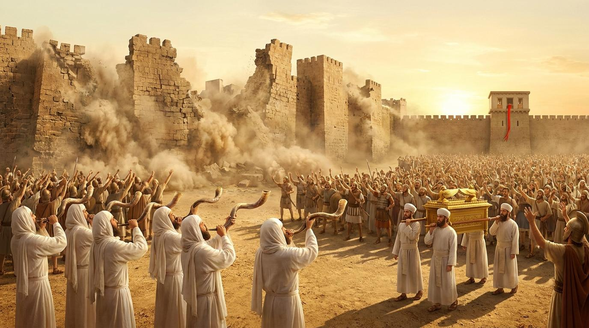

開場禱告
分段解析大綱
第一段：堅持到底的順服：最後一哩路的呼喊
經文範圍 (書 6:15-16, 20)
第七日清早，黎明的時候，他們起來，照樣繞城七次... 約書亞對百姓說：「呼喊吧，因為耶和華已經把城交給你們了！」... 於是百姓呼喊，祭司也吹角... 城牆就塌陷...
關鍵原文
「呼喊」（רוּעַ / *ruwa'*）：意指「發出震耳欲聾的呼聲」。這不是普通的喊叫，而是帶有信心與宣告性質的呼喊，用於迎接君王或慶祝勝利。
關鍵問題
為什麼上帝要以色列人在牆倒塌「之前」就先呼喊？
解析：這是一種信心的操練，表明得勝建立在上帝的應許上，而非眼見的環境。在看見神蹟前，先以讚美回應。
🌱 例證：毛竹的成長
毛竹前五年在地下扎根，地面幾不見動靜，第六年卻瘋狂生長。繞城七天亦是如此，在信心中深扎，神蹟在瞬間爆發。
「門徒訓練是在同一個方向上長期的順服。」
—— 畢德生 (Eugene Peterson)
第二段：分別為聖的考驗：毀滅中的絕對主權
經文範圍 (書 6:17-19, 21)
這城和其中所有的都要在耶和華面前毀滅... 不可取那當滅的物... 又將城中所有的... 都用刀殺盡。
關鍵原文
「當滅的物/毀滅」（חֵרֶם / *cherem*）：意指「完全奉獻給神的事物」，透過毀滅實現。表明物品絕對歸屬耶和華，人不可私用。
關鍵問題
如何理解將城中活物「殺盡」的嚴厲命令？
解析：這是對迦南地數百年極度敗壞的公義審判。上帝對罪惡採取「零容忍」態度，防止屬靈毒瘤感染聖潔子民。
🏥 例證：腫瘤切除
外科醫生面對惡性腫瘤必須徹底清除。上帝的審判是為了拯救整體生命，清除罪惡的癌細胞。
「如果你的神從不與你意見相左，那麼你敬拜的可能只是你自己理想化的倒影。」
—— 提摩太·凱勒 (Timothy Keller)
第三段：審判中的救恩：紅繩標記的恩典
經文範圍 (書 6:22-25)
約書亞吩咐... 將那女人和她所有的都領出來... 約書亞卻把妓女喇合與她父家... 都救活了。
關鍵原文
「救活/存活」（חָיָה / *chayah*）：意指「使之存活、復甦」。在毀滅中，這個詞凸顯了新生與延續的盼望。
關鍵問題
為什麼嚴格審判中，上帝特意拯救一個外邦妓女？
解析：恩典超越國籍、職業與過去。喇合的紅繩預表耶穌基督的寶血。我們都是原本注定滅亡的罪人，因信心而獲新生。
🏠 例證：彭柯麗的假牆
二戰中藏匿猶太人的假牆是生命的保障。紅繩亦然，它是信心與應許的標記，成為末日審判中的避難所。
「恩典就是神降下祂的愛，去尋找那些悖逆祂、本該受地獄之火的人。」
—— 司布真 (Charles Spurgeon)
第四段：敬畏神的警告：不可重建的深淵
經文範圍 (書 6:26-27)
有興起重修這耶利哥城的人，當在耶和華面前受咒詛。他立根基的時候，必喪長子，安門的時候，必喪幼子。
關鍵原文
「咒詛」（אָרַר / *arar*）：意指「被捆綁、面臨災禍」。宣告恢復神所毀滅之物的人，將付出慘痛代價。
關鍵問題
約書亞為何要對重修耶利哥城的人發出咒詛？
解析：耶利哥的廢墟是神蹟的紀念碑。重建代表抹殺上帝作為並試圖恢復罪惡模式。神所拆毀的舊生命，絕不可私自重建。
🥃 例證：重回賭場
脫離惡習者若試圖「回頭喝一杯」，往往帶來更慘痛的毀滅。神拆毀的罪惡營壘，絕不可重築。
「廉價的恩典是我們自己給自己的恩典……是沒有十字架的恩典。」
—— 潘霍華 (Dietrich Bonhoeffer)
講道文稿
當高牆倒塌時：
順服的呼喊與恩典的拯救
弟兄姊妹，今天我們要一起進入約書亞記第六章的最高潮。在這裡，我們看見了高牆的倒塌、毀滅的審判，以及奇妙的恩典。我們生命中是否也有看似無法攻克的「耶利哥城」？讓我們透過今天的經文，看見神的工作法則。
首先，我們來看第一段：堅持到底的順服：最後一哩路的呼喊。
請看聖經：「於是百姓呼喊，祭司也吹角。百姓聽見角聲，便大聲呼喊，城牆就塌陷，百姓便上去進城，各人往前直上，將城奪取。」（約書亞記 6:20）
上帝要以色列人繞城七天，前六天寂靜無聲，直到第七天才發出巨大的「呼喊」（*ruwa'*）。這不是看見城牆倒塌後的慶祝，而是在看見神蹟之前的宣告！這告訴我們，信心是走完最後一哩路的關鍵。就像畢德生所說的：「門徒訓練是在同一個方向上長期的順服。」 我們常常在第六天就放棄了，但神要我們在困境中，即使毫無動靜，依然在最後一刻用讚美和順服大聲呼喊，因為勝利在乎耶和華！
接著，我們來到第二段：分別為聖的考驗：毀滅中的絕對主權。
經文說這城和其中所有的都要在耶和華面前「毀滅」（*cherem*）。這是把一切當作祭物完全獻給神。很多人無法理解舊約中上帝這種滅絕的命令，但我們必須明白，耶利哥代表著長久以來極度敗壞的罪惡。神對罪是零容忍的。這就像外科醫生切除腫瘤，必須徹底，否則將反噬全人。提摩太·凱勒提醒我們：「如果你的神從不與你意見相左，那麼你敬拜的可能只是你自己理想化的倒影。」 我們不能把世界上的敗壞保留在屬靈生命中，必須全然分別為聖。
但在這嚴厲的審判中，我們看見了第三段：審判中的救恩：紅繩標記的恩典。
經文記載，約書亞把妓女喇合與她父家都「救活了」（*chayah*）。在整座城的毀滅中，一個原本最不配、地位最低下的外邦妓女，只因為她對神有真實的信心，並掛上了那條紅繩，就全家得救！這就是福音的縮影。司布真曾說：「恩典就是神降下祂的愛，去尋找那些悖逆祂、本該受地獄之火的人。」 我們其實都是喇合，因著耶穌基督寶血的紅繩，我們在末日的審判中免了滅亡，並被接納成為神家裡的人。
最後，我們看見第四段：敬畏神的警告：不可重建的深淵。
約書亞發出了一個強烈的「咒詛」（*arar*）：「有興起重修這耶利哥城的人，當在耶和華面前受咒詛。」這是一座神大能與審判的紀念碑。當上帝摧毀了我們生命中舊有的罪惡營壘，我們絕對不可以試著去把它重建回來！潘霍華警告我們：「廉價的恩典是我們自己給自己的恩典……是沒有十字架的恩典。」 蒙恩之後，我們必須敬畏神，不再重蹈覆轍，不可在神所拆毀的廢墟上，重新建立我們的貪婪、驕傲與情慾。
結論
回應與實踐行動
寫下你的「耶利哥」
在筆記本上寫下一項目前看似無法跨越的困難，承諾本週每天禱告，並在第七天發出感恩與得勝的宣告。
屬靈大掃除
求聖靈光照，找出任何阻礙你與神關係的「當滅之物」（不良習慣、物品或怨恨），果斷清理它。
拋出紅繩
主動聯繫一位處在生命邊緣、或者別人認為「沒救了」的朋友，向他分享上帝的愛，成為他生命中的那條紅繩。
名言佳句
「禱告不是改變上帝，而是改變我們自己。」
—— 傅士德 (Richard Foster)
「恩典不代表神認可我們原有的樣子，恩典是神提供能力，讓我們成為祂定意要我們成為的樣子。」
—— 魏樂德 (Dallas Willard)
「沒有一顆被十字架破碎過的心，就無法真正經歷復活的喜樂。」
—— 盧雲 (Henri Nouwen)
「我們真正擁有神的時刻，是當我們除了神以外一公所有的時候。」
—— 陶恕 (A.W. Tozer)
「信心是一支活潑的、放膽倚靠上帝恩典的勇氣；這樣的確信，足以讓人為之赴死一千次。」
—— 馬丁·路德 (Martin Luther)
「在上帝的主權下，哪怕是一粒微塵的飄落，也在祂永恆的旨意之中。」
—— 約翰·加爾文 (John Calvin)
「真正的信仰主要存在於聖潔的情感之中。」
—— 喬納森·愛德華茲 (Jonathan Edwards)
「我們最深切的需求不是免於困難，而是即使在風暴之中，仍能確知上帝的同在。」
—— 葛理翰 (Billy Graham)
「順服上帝是我們唯一的安全之處；離開了祂的旨意，就沒有安全可言。」
—— 查爾斯·史丹利 (Charles Stanley)
「世界尚未看見一個完全奉獻給神的人，神能藉著他成就何等大的事。」
—— 慕迪 (D.L. Moody)
⚠️ 網路資料可能出錯，請小心查證、謹慎使用。
